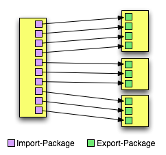
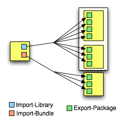

Developing Applications
Applications that take advantage of the OSGi capabilities of Virgo are typically comprised of multiple bundles. Each bundle may have dependencies on other bundles. Furthermore, each bundle exposes only certain packages and services. In this chapter, we look at how to create bundles, import and export appropriate functionality, and create artifacts to deploy web applications on the Virgo for Apache Tomcat.
Anatomy of a Bundle
|
Tip
|
This is an abbreviated introduction to OSGi bundles. Please refer to the Eclipse Gemini Blueprint Reference Guide for full details. |
An OSGi bundle is simply a jar file with metadata that describe additional characteristics such as version and imported and exported packages.
A bundle exports types and publishes services to be used by other bundles:
-
Types: via the OSGi
Export-Packagedirective, -
Services: via Gemini Blueprint’s
<service … >XML namespace element.
A bundle may import types and services exported by other bundles:
-
Types: via the OSGi
Import-Packagedirective, -
Services: via Gemini Blueprint’s
<reference … >XML namespace element.
Let’s see an example from the PetClinic sample application. The following listing shows the
MANIFEST.MF file for the org.springframework.petclinic.infrastructure.hsqldb bundle.
Manifest-Version: 1.0
Bundle-ManifestVersion: 2
Bundle-Name: PetClinic HSQL Database Infrastructure
Bundle-SymbolicName: org.springframework.petclinic.infrastructure.hsqldb
Bundle-Version: 1.0
Import-Library: org.springframework.spring;version="[2.5,2.6]"
Import-Bundle: com.springsource.org.apache.commons.dbcp;version="[1.2.2.osgi,1.2.2.osgi]",
com.springsource.org.hsqldb;version="[1.8.0.9,1.8.0.9]"
Import-Package: javax.sql
Export-Package: org.springframework.petclinic.infrastructureThe org.springframework.petclinic.infrastructure.hsqldb bundle expresses its dependencies on
the javax.sql package, the Commons DBCP and HSQLDB bundles, and the Spring library (we will examine
the details of the library artifact in Defining Libraries. The Commons DBCP
bundle is imported at a version of exactly 1.2.2.osgi and the HSQLDB bundle is imported at a version of exactly
1.8.0.9. The Spring library is imported at a version between 2.5 inclusive and 2.6 exclusive.
Note that you do not specify the bundle that will provide the imported packages. Virgo will examine the available bundles and satisfy the required dependencies.
The following osgi-context.xml file from the PetClinic sample’s
org.springframework.petclinic.repository.jdbc bundle declares a service published by the bundle and
references a service published by another bundle.
<?xml version="1.0" encoding="UTF-8"?>
<beans:beans xmlns="http://www.springframework.org/schema/osgi"
xmlns:xsi="http://www.w3.org/2001/XMLSchema-instance"
xmlns:beans="http://www.springframework.org/schema/beans"
xsi:schemaLocation="http://www.springframework.org/schema/osgi
http://www.springframework.org/schema/osgi/spring-osgi.xsd
http://www.springframework.org/schema/beans
http://www.springframework.org/schema/beans/spring-beans.xsd">
<service id="osgiClinic" ref="clinic" interface="org.springframework.petclinic.repository.Clinic" />
<reference id="dataSource" interface="javax.sql.DataSource"/>
</beans:beans>The service element publishes the clinic bean
(a regular Spring bean declared in the module-context.xml file) and specifies
org.springframework.petclinic.repository.Clinic as the type
of the published service.
The reference elements define a dataSource bean that references
a service published by another bundle with a an interface type of javax.sql.DataSource.
Creating PARs and Web Applications
Virgo supports two OSGi-oriented ways of packaging applications: the PAR format and application bundles (including web bundles). The VTS also supports three distinct WAR deployment and packaging formats: standard Java EE WAR, Shared Libraries WAR, Shared Services WAR.
Virgo also supports plans as a way to describe an application. This method is similar to a PAR in that it encapsulates all the artifacts of an application as a single unit, but differs in that a plan simply lists the bundles in an XML file rather than packaging all the bundles in a single JAR file. The use of plans offers additional benefits to using PARs; for this reason, we recommend their use. For details, see Creating Plans.
PARs
An OSGi application is packaged as a JAR file, with extension .par. A PAR artifact offers several benefits:
-
A PAR file has an application name, version, symbolic name, and description.
-
The artifacts of a PAR file are scoped so that they cannot be shared accidentally by other applications. The scope forms a boundary for automatic propagation of load time weaving and bundle refresh. See Plans and Scoping for more on scoping.
-
Since a PAR is scoped, its artifacts have their exported packages imported by the synthetic context bundle which is used for thread context class loading. So, for example, hibernate will be able to load classes of any of the exported packages of the bundles in a PAR file using the thread context class loader.
-
A PAR file is visible to management interfaces.
-
A PAR file can be undeployed and redeployed as a unit.
-
A PAR file is atomic in that it ties together the lifecycle of its artifacts. If you start, stop, or uninstall one of a PAR’s artifacts, Virgo escalates the operation to the whole PAR file. So Virgo prevents artifacts of a PAR from being in inconsistent states. For example, if one artifact should fail to start, then Virgo stops all artifacts in the PAR.
See Plans and Scoping for more information on scoping.
A PAR includes one or more application bundles and its manifest specifies the following manifest headers:
| Header | Description |
|---|---|
|
Identifier for the application which, in combination with Application-Version, uniquely identifies an application |
|
Human readable name of the application |
|
Version of the application |
|
Short description of the application |
The following code shows an example MANIFEST.MF in a PAR file:
Application-SymbolicName: com.example.shop
Application-Version: 1.0
Application-Name: Online Shop
Application-Description: Example.com's Online Shopping Applicationanchor:developing-applications-web-application-bundles
Web Application Bundles
Virgo for Apache Tomcat supports Web Application Bundles that are compliant with the OSGi Web Applications specification.
The defining property of a Bundle that makes it a Web Application Bundle is a manifest header, Web-ContextPath.
This defines the context path the web application will be registered under.
See Using Spring and Gemini Blueprint for information on using Spring or Gemini Blueprint in a Web Application Bundle.
Creating Plans
Plans are similar to PARs in that they encapsulate the artifacts of an application as a single unit. However plans are XML files that refer to their artifacts, whereas PARs are JAR files that physically contain their artifacts. Plans, known as parent plans may refer to other plans, known as child plans.
Plans share several benefits with PARs:
-
A plan has a (symbolic) name and a version.
-
A plan may be scoped, although this is optional. See Plans and Scoping for more on scoping.
-
A plan is visible to management interfaces.
-
A plan can be undeployed and redeployed as a unit.
-
A plan may be atomic, although this is optional.
Plans have the following additional benefits compared to PARs:
-
Virgo deploys the artifacts in the plan in the order in which they are listed in the XML file, which gives you complete control over deployment order. With a PAR, the order of deployment of the included artifacts is not guaranteed.
-
Since plans refer to their artifacts, it is easier to share content between plans as well as update individual parts of a plan without having to physically repackage (re-JAR) it.
-
Plans may contain child plans, but PARs cannot contain other PARs.
-
You can make certain plans deploy faster by disabling the provisioning of bundles to satisfy missing dependencies, but you cannot disable provisioning for PARs.
-
You can specify whether a plan is scoped or unscoped and atomic or non-atomic; PARs are always scoped and atomic.
The artifacts of a plan are usually stored in Virgo’s repository. This means, for example, that if you drop one of the plan’s artifacts in the pickup directory rather than adding it to the repository, the plan will fail to deploy because it will not find the artifact.
The artifacts of a plan may also be stored outside Virgo’s repository, somewhere else on the file system and referenced from the plan using URIs. Such artifacts must be available on the file system when the plan is deployed and when Virgo restarts while the plan is deployed. If you delete any of these artifacts, deployment of the plan may fail, either when it is initially deployed or when Virgo restarts.
Creating the Plan XML File
Plans are XML files that have a .plan file extension, such as multi-artifact.plan.
The structure of the XML file is simple:
the root element is <plan> with attributes specifying the name of the plan, the version, atomicity, and scoping.
Then, for each artifact that makes up your application,
you add a <artifact> element, using its attributes to specify the type of artifact and its name and version.
The following is a simple example of a plan’s XML file:
<?xml version="1.0" encoding="UTF-8"?>
<plan name="multi-artifact.plan" version="1.0.0" scoped="true" atomic="true"
xmlns="http://www.eclipse.org/virgo/schema/plan"
xmlns:xsi="http://www.w3.org/2001/XMLSchema-instance"
xsi:schemaLocation="
http://www.eclipse.org/virgo/schema/plan
http://www.eclipse.org/virgo/schema/plan/eclipse-virgo-plan.xsd">
<artifact type="configuration" name="app-properties" version="1.0.0"/>
<artifact type="bundle" name="com.springsource.exciting.app" version="[2.0.0, 3.1.0)"/>
</plan>In the preceding example, the name of the plan is multi-artifact.plan and its version is 1.0.0.
The plan is both scoped and atomic. The plan contains two artifacts: one is a bundle called com.springsource.exciting.app and the other is a configuration file called app-properties.
The following table describes the attributes of the <plan> element.
| Attribute | Description | Required? |
|---|---|---|
|
Specifies the name of this plan. Virgo uses the name as one component of the unique identifier of this plan. |
Yes. |
|
Specifies the version of this plan.
You must use OSGi version specification syntax,
such as |
Yes. |
|
Specifies whether Virgo should install the
artifacts into plan-specific scope so that only the
application described by this plan has access to the artifacts.
If you disable scoping, then Virgo installs
the artifacts into the global scope, which means they
are then available for access by all other deployed artifacts.
Set the attribute to |
Yes. |
|
Specifies whether you want to tie together the lifecycle
of the artifacts in this plan.
Making a plan atomic means that if you start, stop, or
uninstall a single artifact in the plan, Virgo
escalates the operation to the whole plan.
Also Virgo prevents artifacts of an atomic plan
from being in inconsistent states.
For example, if one artifact should fail to start,
then Virgo stops all artifacts in the plan.
Set this attribute to |
Yes. |
|
Specifies whether Virgo installs bundles from
the repository to attempt to satisfy any missing
dependencies in the plan.
Missing dependencies prevent one or more bundles in
the plan from resolving.
For example, a bundle which imports a package cannot
resolve if the package is missing, that is, not
exported by another bundle. A value of
|
No. If not specified, defaults to |
The following table describes the attributes of the <artifact> element. Note that you must either specify type, name, and (optionally) version,
in which case Virgo’s repository is searched for the artifact, or uri in which case the artifact is obtained directly from the file system.
If you specify uri, you must not specify type, name, or version.
| Attribute | Description | Required? |
|---|---|---|
|
Specifies the type of the artifact. Valid values are:
|
Yes, unless |
|
Specifies the name of the artifact. See Artifact Names for guidelines for determining the name of an artifact. |
Yes, unless |
|
Specifies the range of versions of this artifact that
Virgo should look up in its repositories and
then install and deploy.
You must use OSGi version specification syntax,
such as |
No. If |
|
Specifies an optional, absolute URI string beginning
with |
No. If not specified, Virgo searches for the artifact in its repository. |
Artifact Names
When you create a plan, you use the name attribute of the <artifact> element to specify the name of all the plan’s dependencies. This section describes how to determine the name of an artifact, which is not always obvious.
Use the following guidelines to determine the name of an artifact:
-
Bundle: In this context, a bundle refers to a standard OSGi bundle as well as a Web Application Bundle and a WAR file. The name of a bundle is the value of the
Bundle-SymbolicNameheader in theMETA-INF/MANIFEST.MFfile of the*.jar. If a WAR file hasBundle-SymbolicNameheader then it will be treated as a Web Application Bundle. The followingMANIFEST.MFsnippet shows a bundle with namecom.springsource.exciting.app:
Bundle-SymbolicName: org.eclispe.virgo.exciting.app
If the bundle does not contain a META-INF/MANIFEST.MF file or the MANIFEST.MF doesn’t contain a Bundle-SymbolicName header, then the name of the bundle is its filename minus the .jar or .war extension.
-
Configuration File: The name of a configuration or PID (Persistent Identity) is its filename minus the
.propertiesextension. The PID can also be specified within the properties file with the service.pid property. -
Plan: The name of a plan is the value of the required
nameattribute of the<plan>element in the plan’s XML file. In the following XML snippet, the plan name ismulti-artifact.plan:
<?xml version="1.0" encoding="UTF-8"?>
<plan name="multi-artifact.plan" version="1.0.0" scoped="true" atomic="true"
xmlns="http://www.eclipse.org/virgo/schema/plan">
-
PAR: The name of a PAR is the value of the
Application-SymbolicNameheader in theMETA-INF/MANIFEST.MFfile of the*.parfile. The followingMANIFEST.MFsnippet shows a PAR with namecom.springsource.my.par:
Application-SymbolicName: org.eclipse.virgo.my.par
If the PAR does not contain a META-INF/MANIFEST.MF file, then the name of the PAR is its filename minus the .par extension.
Supplying Properties to Artifacts
It is possible to pass properties to an artifact specified in a plan. An example of this can be seen in the Admin Console plan where the context path to be used in the Admin console is passed from the plan.
<artifact type="bundle" name="org.eclipse.virgo.apps.admin.web" version="[3.0, 4.0)">
<property name="header:Web-ContextPath" value="/admin" />
</artifact>The only supported property is header which will overwrite the given manifest header with the supplied value. This should be used with care!
Using the Plan
Because a plan is a list of artifacts, rather than a physical file that contains the artifacts, there are a few additional steps you must perform before you deploy it to Virgo.
-
Copy the artifacts that make up the plan to the
usrrepository, which by default is the$SERVER_HOME/repository/usrdirectory, where$SERVER_HOMErefers to the top-level installation directory of Virgo. Note that you might have configured the server differently; in which case, copy the artifacts to your custom repository directory. -
Restart Virgo if the repository used is not a watched repository.
-
After the server has started, either use the Admin Console to deploy the plan, or manually deploy it by copying the plan’s XML file into the
$SERVER_HOME/pickupdirectory. -
This results in Virgo deploying the plan.
-
To undeploy the plan, use the Admin Console, or simply delete it from the
$SERVER_HOME/pickupdirectory.
Plans and Scoping
As described in previous sections, you can specify that a plan be scoped. This means that Virgo installs the artifacts that make up the plan into a plan-specific scope so that only the application described by the plan has access to the artifacts. If you disable scoping, then Virgo installs the artifacts into the global scope, which means they are available for access by all other deployed artifacts. This section describes scoping in a bit more detail. It also describes how you can change the default behavior of scoping, with respect to services, so that a service that is in a scope can be made globally available.
If a bundle in a given scope imports a package and a bundle in the same scope exports the package, then the import may only be satisfied by the bundle in the scope, and not by any bundles outside the scope, including the global scope. Similarly, package exports from bundles in a scope are not visible to bundles in the global scope.
If a bundle in a scope uses Spring DM (or the blueprint service) to obtain a service reference and a bundle in the same scope uses Spring DM (or the blueprint service) to publish a matching service, then the service reference may only bind to the service published in the scope (and not to any services outside the scope). Services published by bundles in a scope are not visible to bundles in the global scope.
However, sometimes it is useful to make a service in a scope globally available to artifacts outside the scope. To do this, publish the service with the org.eclipse.virgo.service.scope service property set to global. Use the <service-properties> child element of <service>, as shown in the following example:
<service id="publishIntoGlobal" interface="java.lang.CharSequence">
<service-properties>
<beans:entry key="org.eclipse.virgo.service.scope" value="global" />
</service-properties>
<beans:bean class="java.lang.String">
<beans:constructor-arg value="foo"/>
</beans:bean>
</service>A scope forms a boundary for automatic propagation of load time weaving and bundle refresh. Additionally, a synthetic context bundle is generated for each scope. This bundle imports all the packages exported by other bundles in the scope. The class loader of the synthetic context bundle is used for thread context class loading. So, for example, hibernate will be able to load classes of any of the exported packages of the bundles in a scope using the thread context class loader.
To ensure predictable class loading behaviour and avoid other issues associated with split packages (packages whose classes are split across more than one bundle), the synthetic context bundle has a restriction: no package may be exported by more than one bundle in the scope*. If this restriction is broken, the scoped application will fail to deploy. This restriction can cause problems for substitutable exports.
Web Applications and Scoping
A Web Application Bundle (WAB) or WAR has its bundle class loader set as the TCCL, even when the WAB or WAR belongs to a PAR or scoped plan. To enable the TCCL to load classes of other bundles in the same scope as a WAB or WAR, use a WAB which imports the necessary packages.
Also a WAB or WAR has its own per-application trace, independent of the per-application trace of any PAR or scoped plan to which the WAB or WAR belongs.
Creating and Using Configuration Artifacts
Applications typically include some sort of configuration data that might change depending on the environment in which the application is deployed. For example, if an application connects to a database server using JDBC, the configuration data would include the JDBC URL of the database server, the JDBC drvier, and the username and password that the application uses to connect to the database server. This information often changes as the application is deployed to different computers or the application moves from the testing phase to the production phase.
Virgo provides a feature called
configuration artifacts
that makes it very easy for you to manage this configuration data. A
configuration artifact is simply a properties file that is made
available at runtime using the OSGi
ConfigurationAdmin
service. When you create this properties file, you set the values of
the properties for the specific environment in which you are going to
deploy your application, and then update the metadata of your Spring
application to use the properties file. You then deploy the
application and properties file together, typically as a
plan. Virgo automatically creates a configuration artifact from
the properties file, and you can manage the lifecycle of this
configuration artifact in the same way you manage the lifecycle of
PARs, bundles, and plans, using the Admin
Console. Additionally, Virgo subscribes your
application for notification of any refresh of the configuration
artifact and the application can then adapt accordingly, which means
you can easily
change
the configuration of your application without redeploying it.
In sum, configuration artifacts, especially when combined with plans, provide an excellent mechanism for managing external configuration data for your applications.
The following sections describe the format of the configuration artifact, how to update the Spring application context file of your application so that it knows about the configuration artifact, and finally how to include it in a plan alongside your application.
As an example to illustrate the configuration artifact feature, assume
that you have a Spring bean called
PropertiesController
whose constructor requires that four property values be passed to it,
as shown in the following snippet of Java code:
@Controller
public class PropertiesController {
private final String driverClassName;
private final String url;
private final String username;
private final String password;
public PropertiesController(String driverClassName, String url, String username, String password) {
this.driverClassName = driverClassName;
this.url = url;
this.username = username;
this.password = password;
}In the preceding example, the PropertiesController constructor requires four property values: driverClassName, url, username, and password. Note that the example shows just one way that a class might require property values; your application may code it another way.
Additionally, assume that the following snippet of the associated Spring application context XML file shows how the PropertiesController bean is configured:
<bean class="com.springsource.configuration.properties.PropertiesController">
<constructor-arg value="${driverClassName}"/>
<constructor-arg value="${url}"/>
<constructor-arg value="${username}"/>
<constructor-arg value="${password}"/>
</bean>The rest of this section describes how the bean can get these property values using a configuration artifact.
Creating the Properties File
To create a properties file that in turn will become a configuration artifact when deployed to Virgo from which a Spring bean, such as the PropertiesController bean, will get the actual property values, follow these guidelines:
-
Create a text file in which each property is listed as a name/value pair, one pair per line. Precede comments with a
#. For example:
# Properties for the com.springsource.configuration.properties sample driverClassName = org.w3.Driver url = http://www.springsource.com username = joe password = secret
The example shows four properties whose name correspond to the constructor arguments of the PropertiesController Spring bean.
-
Name the file anything you want, as long as it has a
.propertiesextension, such asapp-properties.properties.
Updating Your Application
To update your application so that it "knows" about the configuration artifact, you update the application’s Spring application context XML file, typically located in the WEB-INF or META-INF/spring directories (read Using Spring and Gemini Blueprint
to understand which directory to use).
You use the <context:property-placeholder> element to specify that you want to use the Virgo mechanism for substituting values into bean properties. The properties-ref attribute of this element points to a <osgi-compendium:cm-properties> element which you use to specify the configuration artifact that contains the property values. You set the value of the persistent-id attribute of this element equal to the name of the configuration artifact, which is the name of the properties file minus the .properties extension.
The following sample Spring application context XMl file shows everything wired together; only relevant parts of the file are shown:
<?xml version="1.0" encoding="UTF-8"?>
<beans xmlns="http://www.springframework.org/schema/beans"
xmlns:xsi="http://www.w3.org/2001/XMLSchema-instance"
xmlns:context="http://www.springframework.org/schema/context"
xmlns:osgi-compendium="http://www.springframework.org/schema/osgi-compendium"
xsi:schemaLocation="http://www.springframework.org/schema/osgi
http://www.springframework.org/schema/osgi/spring-osgi-1.2.xsd
http://www.springframework.org/schema/beans
http://www.springframework.org/schema/beans/spring-beans-2.5.xsd
http://www.springframework.org/schema/context
http://www.springframework.org/schema/context/spring-context-2.5.xsd
http://www.springframework.org/schema/osgi-compendium
http://www.springframework.org/schema/osgi-compendium/spring-osgi-compendium-1.2.xsd">
...
<bean class="com.springsource.configuration.properties.PropertiesController">
<constructor-arg value="${driverClassName}"/>
<constructor-arg value="${url}"/>
<constructor-arg value="${username}"/>
<constructor-arg value="${password}"/>
</bean>
<context:property-placeholder properties-ref="configAdminProperties"/>
<osgi-compendium:cm-properties id="configAdminProperties" persistent-id="app-properties"/>
...
</beans>The preceding example shows how the id configAdminProperites wires the <context:property-placeholder> and <osgi-compendium:cm-properties> elements together. Based on the value of the persistent-id attribute, you must also deploy a properties file called app-properties.properties which Virgo installs as a configuration artifact.
Adding the Configuration Artifact to a Plan
Although you can always deploy your application and associated configuration artifact using the pickup directory, we recommends that you group the two together in a plan, add the two artifacts to the repository, and then deploy the plan using the pickup directory. The following sample plan includes the two artifacts:
<?xml version="1.0" encoding="UTF-8"?>
<plan name="multi-artifact.plan" version="1.0.0"
scoped="false" atomic="false"
xmlns="http://www.eclipse.org/virgo/schema/plan"
xmlns:xsi="http://www.w3.org/2001/XMLSchema-instance"
xsi:schemaLocation="
http://www.eclipse.org/virgo/schema/plan
http://www.eclipse.org/virgo/schema/plan/eclipse-virgo-plan.xsd">
<artifact type="configuration" name="app-properties" version="0"/>
<artifact type="bundle" name="org.eclipse.virgo.configuration.properties" version="1.0.0"/>
</plan>For additional information about plans, see Creating Plans.
Using Spring and Gemini Blueprint
Virgo supports the use of Spring framework and Gemini Blueprint by application bundles.
Spring (and Gemini Blueprint) application context XML files should generally be placed in a bundle’s META-INF/spring directory, but
for a web application, these files must be placed in the WEB-INF directory.
|
Tip
|
A common mistake
Placing a web application’s Spring application context XML files in the |
To use Gemini Blueprint from a web application, the contextClass servlet parameter and the servlet context listener
should be configured (in WEB-INF/web.xml) like this:
<context-param>
<param-name>contextClass</param-name>
<param-value>org.eclipse.virgo.web.dm.ServerOsgiBundleXmlWebApplicationContext</param-value>
</context-param>
<listener>
<listener-class>org.springframework.web.context.ContextLoaderListener</listener-class>
</listener>Virgo has Gemini Blueprint built-in and thereby supports the OSGi Blueprint standard in addition to Spring DM.
For detailed information on Spring Framework and Blueprint, please see [prerequisites-references].
Programmatic Access to the Servlet Context
This section describes how to programmatically access the servlet context to obtain the WebApplicationContext or the BundleContext.
Programmatic Access to the WebApplicationContext
The Virgo for Apache Tomcat automatically creates a WebApplicationContext
for Web Application Bundles and WAR files. When used in conjunction with an
an auto-configured Spring MVC DispatcherServlet,
there is generally no need to access the WebApplicationContext
programmatically, since all components of the web application are configured
within the scope of the WebApplicationContext
itself. However, if you wish to access the WebApplicationContext
you can do so via the web application’s ServletContext.
Virgo stores the bundle’s
WebApplicationContext in the ServletContext under
the attribute name “BSN-ApplicationContext”, where
BSN is the Bundle-SymbolicName
of your WAR or Web Application Bundle.
Alternatively, since Virgo also stores the
WebApplicationContext under the attribute name
with the value of the WebApplicationContext.ROOT_WEB_APPLICATION_CONTEXT_ATTRIBUTE
constant, you may choose to use Spring MVC’s WebApplicationContextUtils'
getWebApplicationContext(servletContext)
or
getRequiredWebApplicationContext(servletContext)
methods to access the WebApplicationContext without providing
an explicit attribute name.
Programmatic Access to the BundleContext
As required by the OSGi Web Applications specification, you can access the
BundleContext of your WAR or Web Application Bundle via the web application’s
ServletContext. The bundle context is stored in the
ServletContext under the attribute name osgi-bundlecontext.
Web Application Manifest Processing
Virgo for Apache Tomcat generates automatic package imports (i.e., via the
Import-Package manifest header) for certain web applications.
This section lists which packages are automatically generated.
VTS supports Web Application Bundles (WABs) as defined by the OSGi Web Applications Specification and WAR files. A WAR will typically not contain any OSGi defined manifest headers. A WAB is distinguished from a WAR by the presence of one or more of the following OSGi defined headers:
-
Bundle-SymbolicName -
Bundle-Version -
Bundle-ManifestVersion -
Import-Package -
Web-ContextPath
As required by the OSGi Web Applications specification, the following defaults are applied to a WAR:
-
Bundle-ManifestVersionis set to2 -
Bundle-SymbolicNameis generated from the path from which the bundle was installed -
Bundle-ClassPathis set toWEB-INF/classesfollowed by the JARs inWEB-INF/libin an unspecified order, followed by any transitive dependencies declared by the JARs inWEB-INF/lib -
Import-Packageis extended in an implementation defined way, as described below
The following packages are automatically imported into WARs:
-
javax.servlet;version="2.5" -
javax.servlet.http;version="2.5" -
javax.servlet.jsp;version="2.1" -
javax.servlet.jsp.el;version="2.1" -
javax.servlet.jsp.tagext;version="2.1" -
javax.el;version="1.0"
In addition to the above-described imports, VTS will also
generate automatic imports for all of the packages that are exported by the system
bundle, unless an import for the package already exists in the WAR’s manifest,
or the WAR contains the package, i.e. within WEB-INF/classes,
or in a jar file in WEB-INF/lib. When an import is generated, it
is versioned such that it exactly matches the version or versions of the package that
are exported from the system bundle. For example, a package that’s exported only at
version 1.0.0 will generate an import with a version of
[1.0.0,1.0.0], and a package that’s exported at version
1.0.0 and version 2.0.0 will generate an import
with a version of [1.0.0,2.0.0].
Web Application Bundles are not subject to the above manifest processing. This is a change of behaviour compared to Virgo Web Server 2.1.x. See (see Default Web Application Bundle Headers) if you need the old behaviour until you have changed your WABs to match the new behaviour.
VTS supports ROOT.war as a default web application. The Web-ContextPath
of the deployed ROOT.war is set to the default web context path - /.
|
Tip
|
System Bundle Package Exports
For further details on which packages are exported by the
OSGi system bundle, consult the <filename>java-server.profile</filename>
file located in the |
Working with Dependencies
Complex enterprise frameworks such a Spring and Hibernate are typically divided into many, many different packages. Traditionally, if an OSGi bundle wished to make extensive use of such a framework its manifest would have to import a huge number of different packages. This can be an error-prone and tedious process. Furthermore, application developers are used to thinking in terms of their application using a framework, such as Spring, as a whole, rather than a long list of all the different packages that comprise the framework.
The following figure provides a simple illustration of the complexity of only using Import-Package:

Virgo reduces the need for long lists of imported packages by introducing two new manifest
headers; Import-Bundle and Import-Library. The following figure provides an
illustration of the simplification that these new headers offer:

As you can see, use of Import-Bundle and Import-Library can lead to a dramatic reduction
in the number of imports that you need to include in an application bundle’s manifest. Furthermore, Import-Bundle
and Import-Library are simply aliases for Import-Package; at deployment time Import-Bundle
and Import-Library header entries are automatically expanded into numerous Import-Package entries. This
means that you retain the exact same semantics of using Import-Package, without having to go through the labourious
process of doing so.
Importing Libraries
A bundle in an application can declare a dependency on a library by using the
Eclipse Virgo specific Import-Library header. This header specifies a
comma-separated list of library symbolic names and version ranges that determine which libraries
are imported. By default a dependency on a library is mandatory but this can be
controlled through use of the resolution directive in exactly the same way as
it can with Import-Package.
Import-Library: org.springframework.spring;version="[2.5.4, 3.0)",
org.aspectj;version="[1.6.0,1.6.0]";resolution:="optional"This example Import-Library header declares a mandatory dependency on the Spring
library at a version from 2.5.4 inclusive to 3.0 exclusive. It also declares an
optional dependency on the AspectJ library at exactly 1.6.0.
anchor:developing-applications-importing-bundles
Importing Bundles
A bundle in an application can declare a dependency on a bundle by using the
Eclipse Virgo specific Import-Bundle header. The header specifies a comma-separated
list of bundle symbolic names, version ranges, and scope declarmations that determine which bundles are imported and the scope of their dependency. By default a dependency
on a bundle is mandatory but this can be controlled through use of the resolution directive in exactly
the same way as it can with Import-Package.
Import-Bundle: com.springsource.org.apache.commons.dbcp;version="[1.2.2.osgi, 1.2.2.osgi]"This example Import-Bundle header declares a mandatory dependency on the Apache Commons
DBCP bundle at exactly 1.2.2.osgi.
Scoping Bundles in an Application
When working with a scoped application, such as a PAR file or a plan, you might run into a situation where one of the bundles in the application (call it bundleA) depends on another bundle (bundleB) that performs a runtime task (such as class generation) that a third bundle (bundleC) might need to know about, although bundleC does not explicitly depend on bundleB.
For example, Hibernate uses CGLIB (code generation library) at runtime to generate proxies for persistent classes. Assume that a domain bundle in your application uses Hibernate for its persistent objects, and thus its Import-Bundle manifest header includes the Hibernate bundle. Further assume that a separate Web bundle uses reflection in its data-binding code, and thus needs to reflect on the persistent classes generated by Hibernate at runtime. The Web bundle now has an indirect dependency on the Hibernate bundle because of these dynamically generated classes, although the Web bundle does not typically care about the details of how these classes are persisted. One way to solve this dependency problem is to explicitly add the Hibernate bundle to the Import-Bundle header of the Web bundle; however, this type of explicit-specified dependency breaks the modularity of the application and is not a programming best practice.
A better way to solve this problem is to specify that Virgo itself dynamically import
the bundle (Hibernate in the example above) to all bundles in the application at runtime.
You do this by adding the import-scope:=application directive to the Import-Bundle header
of the bundle that has the direct dependency (the domain bundle in our example). At runtime, although the Web bundle
does not explicitly import the Hibernate bundle, Virgo implicitly imports it and thus its classes are available
to the Web bundle. This mechanism allows you to declare the dependencies you need to make your application run,
without having to make changes to your application that might limit its flexibility.
The following example shows how to use the import-scope directive with the Import-Bundle header:
Import-Bundle: com.springsource.org.hibernate;version="[3.2.6.ga,3.2.6.ga]";import-scope:=applicationYou can also set the import-scope directive to the (default) value bundle; in this case, the scope of the bundle is just the bundle itself and thus Virgo does not perform any implicit importing into other bundles of the application.
Note that use of the import-scope:=application directive of the Import-Bundle header only makes sense when the bundle is part of a scoped application (PAR or plan); if the bundle is not part of a scoped application, then this directive has no effect.
Finally, because import-scope:=application implicitly adds a bundle import to each bundle of the PAR or plan, the impact of subsequently refreshing the imported bundle is, in general, broader than it would have been if you had not used import-scope:=application. This may well affect the performance of refresh.
Defining Libraries
Libraries are defined in a simple text file, typically with a .libd suffix. This file identifies the
library and lists all of its constituent bundles. For example, the following is the library definition for
Spring 2.5.4:
Library-SymbolicName: org.springframework.spring
Library-Version: 2.5.4
Library-Name: Spring Framework
Import-Bundle: org.springframework.core;version="[2.5.4,2.5.5)",
org.springframework.beans;version="[2.5.4,2.5.5)",
org.springframework.context;version="[2.5.4,2.5.5)",
org.springframework.aop;version="[2.5.4,2.5.5)",
org.springframework.web;version="[2.5.4,2.5.5)",
org.springframework.web.servlet;version="[2.5.4,2.5.5)",
org.springframework.jdbc;version="[2.5.4,2.5.5)",
org.springframework.orm;version="[2.5.4,2.5.5)",
org.springframework.transaction;version="[2.5.4,2.5.5)",
org.springframework.context.support;version="[2.5.4,2.5.5)",
org.springframework.aspects;version="[2.5.4,2.5.5)",
com.springsource.org.aopalliance;version="1.0"The following table lists all of the headers that may be used in a library definition:
| Header | Description |
|---|---|
Library-SymbolicName |
Identifier for the library |
Library-Version |
Version number for the library |
Import-Bundle |
A comma separated list of bundle symbolic names.
Each entry may optionally specify a version (using the |
Library-Name |
Optional. The human-readable name of the library |
Library-Description |
Optional. A human-readable description of the library |
Installing Dependencies
Rather than encouraging the packaging of all an application’s dependencies within the application itself, Virgo uses a local provisioning repository of bundles and libraries upon which an application can depend. When the Virgo encounters an application with a particular dependency, it will automatically provide, from its provisioning repository, the appropriate bundle or library.
Making a dependency available for provisioning is simply a matter of copying it to the appropriate location in the
Virgo’s local provisioning repository. By default this is
SERVER_HOME/repository/usr. A more detailed discussion of the provisioning
repository can be found in the User Guide.
Application Trace
As described in the User Guide Virgo provides support for
per-application trace for PARs, scoped Plans and WABs. Virgo provides SLF4J with Logback logging for Event Logging and Tracing.
Application trace is configured in the serviceability.xml file.
See the User Guide for more details.
Application Versioning
In much the same way that individual OSGi bundles can be versioned, Virgo allows applications to be versioned. How exactly you do this depends on how you have packaged the application:
-
If you package your application using a PAR, you version the application by using the
Application-Versionheader in theMANIFEST.MFfile of the PAR file. -
If you use a plan to describe the artifacts that make up your application, you version it by using the
versionattribute of the<plan>root element of the plan’s XML file. -
If your application consists of a single bundle, you version it in the standard OSGi way: by using the
Bundle-Versionheader of theMANIFEST.MFfile of the bundle.
Virgo uses an application’s version to prevent clashes when multiple versions of the same application are deployed at the same time. For example, the application trace support described in Application Trace, includes the application’s name and version in the file path. This ensures that each version of the same application has its own trace or logging file.